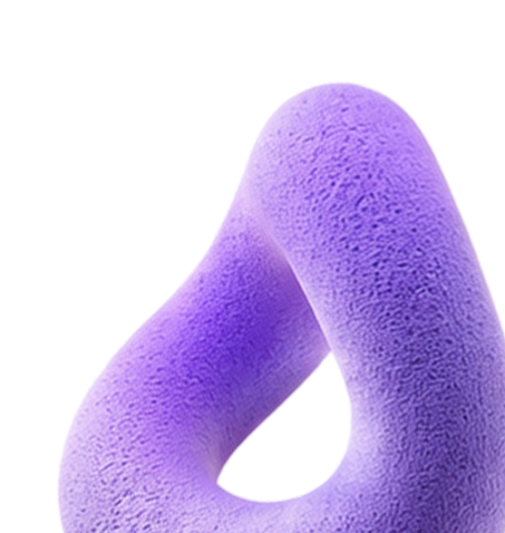
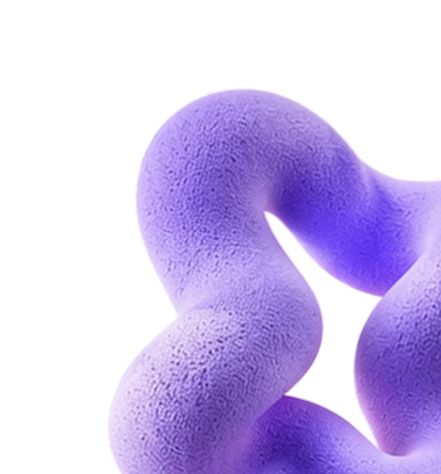

Высшее образование
Бакалавр по психологии
Московский государственный университет им. М.В. Ломоносова
Факультет будет такой то и такой тоКонсультации психолога очно и онлайн, чтобы разобраться в себе и вернуть ощущение опоры
 Научно обоснованный подход
Научно обоснованный подход
 Очно и онлайн
Очно и онлайн
 Конфиденциально
Конфиденциально
Обо мне
Магистр психологии, гештальт терапевт
В своей практике я соединяю академическую психологическую базу, гештальт-подход, личный терапевтический опыт и регулярные супервизии.
Для меня это основа профессиональной позиции: быть внимательной к человеку, видеть шире запроса и сохранять ясность в терапевтическом процессе
Образование
Мой путь в профессии – это не только базовое образование, но и последовательное углубление в практике и подходе
Высшее образование
Московский государственный университет им. М.В. Ломоносова
Факультет будет такой то и такой тоВысшее образование
Московский государственный университет им. М.В. Ломоносова
Факультет будет такой то и такой тоВысшее образование
Московский государственный университет им. М.В. Ломоносова
Факультет будет такой то и такой тоДополнительное образование
Московский институт гештальта
Базовая программа подготовкиПовышение квалификации
Образовательная программа
Кризисные состояния и ПТСРПовышение квалификации
Образовательная программа
Инструменты работы с тревогойПовышение квалификации
Образовательная программа
Созависимость и привязанностьС чем работаю
Можно прийти без готового запроса. Достаточно ощущения, что стало тревожно, тяжело или вы снова сталкиваетесь с тем, что не получается решить в одиночку.
Когда тревога и беспокойство становятся ежедневными и влияют на качество жизни
Постоянные сомнения в себе, зависимость от чужого мнения и строгий внутренний голос, требующий идеальности
Хроническая усталость, отсутствие энергии на привычные дела и потеря интереса к тому, что раньше вдохновляло

Трудности в выстраивании личных границ, страх сказать «нет» и повторяющиеся сценарии, в которых больно

Прохождение через резкие жизненные перемены, адаптация к новому и работа с отголосками болезненных событий
В цифрах

Регулярной психологической практики
Групповой терапевтической работы
Часов индивидуальной терапии
Клиентов уже получили профессиональную помощь
Простые телесные практики, чтобы быстро снизить уровень тревоги и вернуть контроль, когда всё вокруг бежит слишком быстро


5 минут практики

Просто
и понятно

Поддержка в
любой момент
Процесс
Терапия — это бережный процесс. Здесь нет оценок, суждений или давления. Мы двигаемся в вашем темпе, создавая безопасное пространство для ваших внутренних изменений.
Напишите мне в удобный мессенджер. Не нужно подбирать сложные слова — достаточно в свободной форме описать, что сейчас беспокоит или с какими трудностями вы столкнулись. Это поможет мне заранее бережно сориентироваться в вашей ситуации.
Мы выберем удобный день, время и формат для регулярных встреч:
Вместо сухих обещаний «изменить жизнь за час», терапия даёт устойчивые внутренние результаты, которые раскрываются постепенно: